|
Sum Of Times Home : www.sharetechnote.com |
|
I think one of the most common components of mathenatical equations being used in various engineering field would be as follows. (you will see specific examples later). I am pretty sure that almost all of you have seen this component in the mathematical models which you are working on now. So I thought it would be worthwhile looking into the practical meaning of this component as the first topic of my course (at least in engineering mathematics).
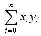
Everybody would have different ways to understand a concept and you can interpret this in any way which is better for you. Personally, I am such a person who has difficulties to understand any concept that cannot be visualized. So whenever I want to learn something, the first step is to try to visualize the basic concepts. Fortunately, I think most of the concept in engineering can be visualized.
My visualization of this mathematical operation is as follows.
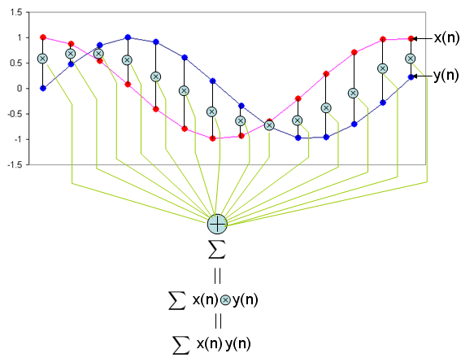
As you see in the mathmatical presentation, it has two component x and y. Judging from the fact that x and y has a subscript (i) which implies that x, y is not a single number. They are a sequence number. In computer programming concept, these x, y are a kind of 1 dimensional arrays.
Can I understand the operation of this mathematical presentation just by looking at the illustration above without any additional explanation ? I strongly hope so. If I present this into a C language syntax which most of you are familiar with, it would be as follows. sum = 0; for (i = 0; i < n; i++) { sum += x[i]*y[i]; }
In short, this operation can be summarized as following two steps. i) multiply (times) each components of the sequence x, y ii) sum all of the result of the multiplication.
This is why I put the title of this page as "Sum of Times" meaning "Sum of Multiplication".
Another widely used graphical representation of "Sum of Times" is as follows. You will often see this representation in Neural Network. 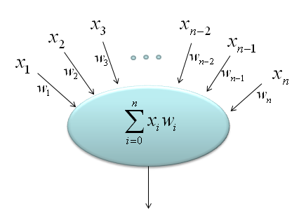
Now let's think about why this mathematical operation is so important. I think it is because this mathmatical form is the most essential component of the following engineering tools which are most commonly used mathemtical tools in engineering area.
Correlation (Correlation Coefficient)
There are many different variation of mathematical representation of Correlation Coefficient. One of examples is as follows. It would look intimidatingly complicated, but the most important part of the equation is the part marked in red rectangle. All the other parts are to make the result of the equation became between -1 and +1.
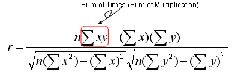
What is the meaning of the correlation coefficient ? Correlation Coefficient is a specific number that represent how closely two sequence (data set) are (related) related. What does it mean by "related" ? My intuitive understanding about "being related" is "how can the two graph of the data set look similar". You may ask another question saying "What do you mean by 'being similar' ?". Let me give you my personal understanding as well for this term. 'Being Similar' can be an indicator to show "How well the graph of the two data set can be overlapped without shifting any of the data set ?". Pay specific attention to "WITHOUT SHIFTING any of the data set". This is very important.
Now let's try visualize the meaning of the Correlation Coefficient. I want you to try to understand this intuitive meaning as hard as possible since this concept will help you understand most of other tools that uses the 'sum of times' component.
I created 6 different data sequence named as x1, x2, x3, x4, x5, x6 respectively. The graph of each data sequences are as follows.
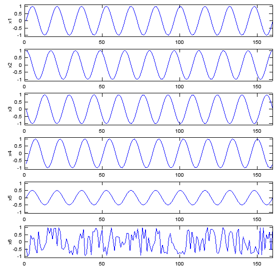
Now let me ask you a question. How similar the sequence x1 and x2 are to each other ? Do you think they are very closely related or very loosely related ? I will give you 10 seconds to think about the answer.
Now let's figure out the correlation coefficient of x1 and x2 using a matlab function as follows. As you see, the calculated coefficient of x1, x2 is 0.000. What does this mean ? It means these two sequences are not related to each other at all. Is this answer close to what you intuitively thought ? It may be not for somebody. You may think "If you shift x2 a little bit to the right or left, you would see x1 and x2 would exactly overlap each other. How come they are not correlated at all ?". You are right, but as I explained earlier, 'Correlation Coefficient' is an indicator to show "How well the graph of the two data set can be overlapped without shifting any of the data set ?". Do you see 'without shifting any of the data' ? If you do the mathematical operation of correlation coefficient for x1 and x2 as it is, you get the value 0.000, which means 'no correlation'. corrcoef(x1,x2) = 0.000 Now let's compare x1 with x3. What do you think about the correlation between these two data sets ? First you would notice that these two data set would never overlap (superimpose) each other. So.. Should Correlation Coefficient be 'zero' ? Let's calculate the correlation coefficient using a matlab function and I got the following result. It's '-1'. How do I interpret this ? Does this mean that there is even less correlation than 'zero correlation' ? No. This means that if you mirror x3 along the horizontal axis, x1 and x3 overlap (superimpose) each other. This is also an example of high correlation. corrcoef(x1,x3) = -1.000 Let's move to the next comparison. Let's compare x1 and x4. First just look at the shape of the graph of x1 and x4. Does it look identical ? No, if you look at them carefully, you would notice that x4 is a little bit of shifted version of x1. What would the correlation coefficient of these two data set be like ? The result is as follows. It shows pretty strong correlation, but not as strong as '1' (100% correlation). Compare the set (x1,x4) and (x1,x2). (x1,x2) gave us zero correlation but (x1,x4) gives us a certain degree of correlation. Both x2 and x4 are the shifted version of x1. Then why do we have different result ? It is because the amount of shift is different. In case of (x1,x2), the shift is 90 degree (pi/2), but in case of (x1,x4) the shift is less than 90 degree. corrcoef(x1,x4) = 0.705 Now let's look into the correlation coefficient of x1 and x5. The result is as follows. Do these two graphs superimpose each other ? NO. Then how come the correlation coefficient become 1.0 (100% correlation) ? Is it because the two graph can superimpose if you change the magnitude of x5. (In this case, if you magnify x5 twice, the two graph superimpose). corrcoef(x1,x5) = 1.000 Now let's take a look at the last case - x1,x6. It would look like this set would be the least correlated to each other. Let's take a correlation coefficient. The result is as follows. As we expected, the correlation is very low... but it is still a little higher than the set (x1, x2). Isn't this against your intuition ? corrcoef(x1,x6) = -0.019 We have gone through several sets of data sets to give you some intuitive understanding of the correlation coefficient. But you would have noticed some of the cases which might go against your intuition. This kind of case can be a risk of using intuition or of just relying on visualization, but I think it still be a better way than totally relying on mathematical equation and gets no clue of the real meaning of it.
Following is the Matlab/Octave script that would give you a series of plots as shown above. Try create any of the data on your own and how the graph and correlation coefficient changes. t=0:2*pi/100:10; Nt = size(t,2); x1=sin(2*pi*t); x2=cos(2*pi*t); x3=-sin(2*pi*t); x4=sin(2*pi*t-pi/4.0); x5=0.5.*sin(2*pi*t); x6=2.*rand(1,Nt)-1; subplot(6,1,1);plot(x1);ylabel('x1');axis([0,Nt,-1.1,1.1]); subplot(6,1,2);plot(x2);ylabel('x2');axis([0,Nt,-1.1,1.1]); subplot(6,1,3);plot(x3);ylabel('x3');axis([0,Nt,-1.1,1.1]); subplot(6,1,4);plot(x4);ylabel('x4');axis([0,Nt,-1.1,1.1]); subplot(6,1,5);plot(x5);ylabel('x5');axis([0,Nt,-1.1,1.1]); subplot(6,1,6);plot(x6);ylabel('x6');axis([0,Nt,-1.1,1.1]); fprintf('corrcoef(x1,x1) = %1.3f\n',corrcoef(x1,x1)) fprintf('corrcoef(x1,x2) = %1.3f\n',corrcoef(x1,x2)) fprintf('corrcoef(x1,x3) = %1.3f\n',corrcoef(x1,x3)) fprintf('corrcoef(x1,x4) = %1.3f\n',corrcoef(x1,x4)) fprintf('corrcoef(x1,x5) = %1.3f\n',corrcoef(x1,x5)) fprintf('corrcoef(x1,x6) = %1.3f\n',corrcoef(x1,x6))
Now we are going to look into such a famous tool, called "Fourier Transform". Here in this section, I would focus on the mathematical meaning of the Fourier Transform (more specifically, Discrete Fourier Transform). See the Fourier Transform page for its role as an engineering tool.
A typical mathematical presentation of Discrete Fourier Transform looks as follows. It may look a little bit complicated, but if you wrap it up into proper chunks you would notice that this is also a kind of "Sum of Times" format.
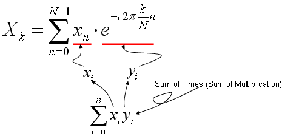
As you learned in Correlation section (explained above), the most intuitive meaning of "Sum of Times" is a kind of indicator showing the correlation between two data sequences. So Fourier Transform is also based on calculating the two specified data sequence as follows. xi = input data sequence for Fourier Transform yi = e^(-i 2pi k n/N) It means that Fourier Transform is indication of correlation between a given data sequence and "e^(-i 2pi k n/N)". If you studied "Exponential Form" or any material about Euler's formula, you would know e^(-i 2pi k n/N) is a cyclic function. It is a cyclic function, the cycle of which is represented by the variable 'k'. Therefore, we can say "Fourier Transform is a tool to show the correlation between a specified data sequence and muliples of cyclic data sequence with different cycle".
If I represent my explanation, Fourier Transform can depicted as follows. (In the following graph, "x1" is the input data you want to do 'fourier transform', and the series of plots on right side is the multiple cyclic data sequence with different cycles. The stem plot at the left bottom is the graph shows the forrelation coefficient of each data pair, i.e (x1, s1), (x1,s2), (x1, s3) and so forth.
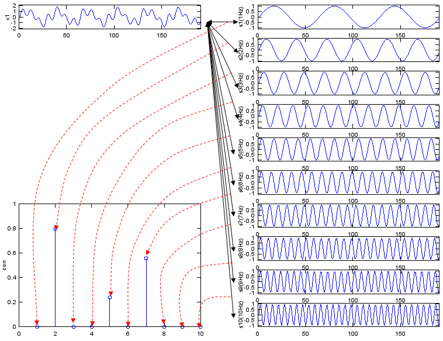
If you convert this description into a mathematical forumula, Fourier Transform can be depicted as follows.
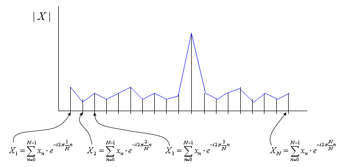
Following is Matlab/Octave script generating the sequence of graphs shown above. Try change the data for x1 in various different way until you get your own intuition of this concept. t=0:2*pi/400:3; Nt = size(t,2); x1 = sin(2*pi*2*t) + 0.3 * sin(2*pi*5*t) + 0.7*sin(2*pi*7*t); s1=sin(2*pi*1*t); s2=sin(2*pi*2*t); s3=sin(2*pi*3*t); s4=sin(2*pi*4*t); s5=sin(2*pi*5*t); s6=sin(2*pi*6*t); s7=sin(2*pi*7*t); s8=sin(2*pi*8*t); s9=sin(2*pi*9*t); s10=sin(2*pi*10*t); corr_vec = [corrcoef(x1,s1) corrcoef(x1,s2) corrcoef(x1,s3) corrcoef(x1,s4) corrcoef(x1,s5) corrcoef(x1,s6) corrcoef(x1,s7) corrcoef(x1,s8) corrcoef(x1,s9) corrcoef(x1,s10)];
subplot(10,2,1);plot(x1);ylabel('x1');axis([0,Nt,-2.1,2.1]);
subplot(10,2,1*2);plot(s1);ylabel('s1(1Hz)');axis([0,Nt,-1.1,1.1]); subplot(10,2,2*2);plot(s2);ylabel('s2(2Hz)');axis([0,Nt,-1.1,1.1]); subplot(10,2,3*2);plot(s3);ylabel('s3(3Hz)');axis([0,Nt,-1.1,1.1]); subplot(10,2,4*2);plot(s4);ylabel('s4(4Hz)');axis([0,Nt,-1.1,1.1]); subplot(10,2,5*2);plot(s5);ylabel('s5(5Hz)');axis([0,Nt,-1.1,1.1]); subplot(10,2,6*2);plot(s6);ylabel('s6(6Hz)');axis([0,Nt,-1.1,1.1]); subplot(10,2,7*2);plot(s7);ylabel('s7(7Hz)');axis([0,Nt,-1.1,1.1]); subplot(10,2,8*2);plot(s8);ylabel('s8(8Hz)');axis([0,Nt,-1.1,1.1]); subplot(10,2,9*2);plot(s9);ylabel('s9(9Hz)');axis([0,Nt,-1.1,1.1]); subplot(10,2,10*2);plot(s10);ylabel('s10(10Hz)');axis([0,Nt,-1.1,1.1]); subplot(10,2,[13 15 17 19]);stem(abs(corr_vec));ylabel('corr');axis([0,10,0,1.0]);
Convolution is an tool which is as widely used as Fourier Transform. When we "analyze" or "design" something (e.g, Filter or Control System) we usually use Fourier Transform, but when we "implement" what we designed, we normally use "convolution". Fourier Transform is a tool which convert a time domain entity into a frequency domain entity. Convolution is a tool which manipulate a time domain entity as it is in time domain. To be honest, I haven't heard the word 'Convolution' before I first started a filter design product around 20 years ago and I haven't understood the real meaning of this tool for a couple of years even while I was using the tool very heavily and even implemented it in my program. So don't get disappointed if you don't understand this right away. As far as I exprienced, it took me take at least several month to understand the real meaning of any new concept even though it may look simple. The most important thing is to hold on to it without giving up until you grasp the real understanding however long it would take.
Actually it is very difficult to understand the real/intuitive meaning of convolution without animation. (please refer to a couple of links I listed below). But you should not rely on to the animated explation only. You would say "Ah Ha... Now I think I understand this" when you see those animated ones, but your understanding would start fading a couple of days later. At some point, you have to directly attack the math itself and solidify your understanding.
I will try add a couple of more illustration later hoping it help more. For now, if I just describe it the process verbally,
Let's assume we have two data called 'f[m]', 'g[m]'. In convolution, these two data has two different role.. one is the data to be processed and the other one is what we call 'kernel'. Let's assume f[m] is the data to be processed and g[m] as 'kernel'. Let's assume c[n] is the result data of the convolution. Usually f[] is much longer than g[]. We want to take the convolution of these two data. Overall step goes like this. i) Take the kernel data sequence (in this case, g[m]) and flip it around (revserse it). This gives you g[-m] ii) Align f[m] and g[-m] to the left. Now the starting position of f[m] and g[-m] is same. iii) Perform the "sum of times (sum of multiplication)" between f[m] and g[-m] from the first elements of g[-m] to the last elements of g[-m] and put the result into the first element of c[] data.(It means the result goes into c[0]). iv) Shift g[-m] data to the right by one step (this is called g[-(m-1)] or g[1-m]). Now the second data of f[] and first data of g[-(m-1)] is aligned. v) Perform the "sum of times (sum of multiplication)" between f[] and g[] from the first elements of g[-(m-1)] to the last elements of g[-(m-1)] and put the result into the first element of c[] data.(It means the result goes into c[1]). iv) Shift g[-(m-1)] data to the right by one step (this is called g[-(m-2)] or g[2-m]). Now the second data of f[] and first data of g[-m] is aligned. v) Perform the "sum of times (sum of multiplication)" between f[] and g[] from the first elements of g[-(m-2)] to the last elements of g[-(m-2)] and put the result into the first element of c[] data.(It means the result goes into c[2]). vi) Now you see any pattern. Do this pattern until g[] reaches to the end of f[].
For clearer understanding, I recommend you to try this whatever programing language (C, Java, Matlab, Octave etc) you are familiar with. If you are not familiar with any of the programming language, Microsoft Excel would be an excellent tool for you to try.
I hope following illustration would help you a little bit understand the mathematical component of the convolution.
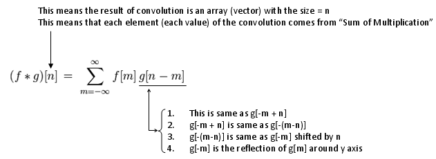
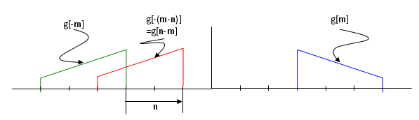
One of the simplest and most common example of the convolution can be found in stock chart. In stock chart, you would see 7 days moving average or 52 days moving everage etc. This kind of moving average is the most common example of convolution.
if you set the data as follows, f[] = daily stock price data g[] = [1/7 1/7 1/7 1/7 1/7 1/7 1/7]
If you take the convolution of f[] and g[], the result will give you 7 days moving average of the stock price data.
Following is a couple of links that you give you a couple of intuitive understanding of the convolution process.
I think you might have learned about a vector. (you may have learned this in high school in some country or learned it in Linear Algebra course in University). In the course, you may have learned an mathematical operator called 'inner product' of vectors. '
If you define a two vector as follows, 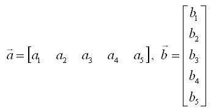
The inner product of these two vectors are defined as follows. (What is practical meaning of "Inner Product"? I would try to explain on this in Vector page).
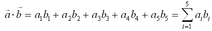
You would notice this is a straightforward example of "sum of times". This is why in many text book many authors likes to this kind of 'vector inner product' notation for various "sum of times" operation. Once you see those process expressed as this kind of purely mathematical operation, you start feel dizzy and close the book. But it is more like a psychogical effect. Just try to convert it into a form which gives you less psychological burden like "sum of times" form and you can continue to read the book -:)
Just look at the following diagrams first and think on your own about how this can be related to the "sum of times/sum of multiplication" process. Refer to Neural Network section in Matrix page.
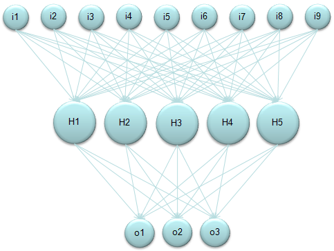
Again, refer to Neural Network section in Matrix page to know how you can get the following representdation from the diagram above.
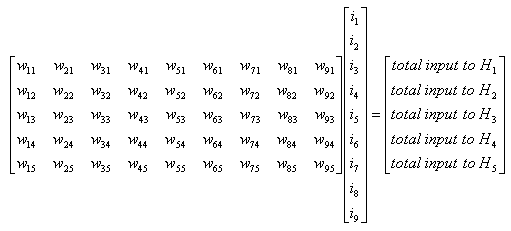
Again, refer to Neural Network section in Matrix page to know how you can get the following representdation from the diagram above. 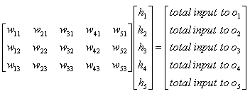
Application - Convolution - FIR - Low Pass Filter
In a previous section, you understand how the process called "sum of times" is used for a complicated process called 'Convolution'. This section would give you a example on how the process 'Convolution' is used in a engineering application. This example shows you how covolution is used to implement a digital filter and of course, the fundamental mathemtical process is "sum of times".
Most of digital filter (FIR filter in this case) is represented as follows. Take bi = g[] and x[] = f[] and read the 'convolution' section. then you would understand how this works. The only difference between this mathematical representation and the one used in 'convolution' section is that in this case f[] is shifting at each iteration, but in convolution section g[] was shifting at each iteration. But result is the same.
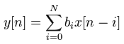
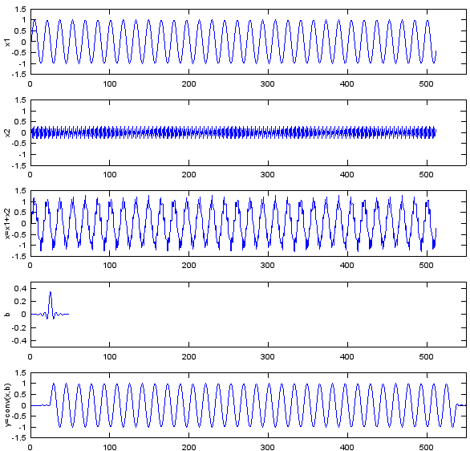
Following is the Matlab and Octave code you can try. Fs=8e3; Ts=1/Fs; Ns=512; t=[0:Ts:Ts*(Ns-1)]; f1=500; f2=3200; x1=sin(2*pi*f1*t); x2=0.3*sin(2*pi*f2*t); x=x1+x2; b = fir1(48,0.35,'low'); y=conv(x,b); subplot(5,1,1); plot(x1);ylabel('x1');axis([0,550,-1.5,1.5]); subplot(5,1,2); plot(x2);ylabel('x2');axis([0,550,-1.5,1.5]); subplot(5,1,3); plot(x);ylabel('x=x1+x2');axis([0,550,-1.5,1.5]); subplot(5,1,4); plot(b);ylabel('b');axis([0,550,-0.5,0.5]); subplot(5,1,5); plot(y);ylabel('y=conv(x,b)');axis([0,550,-1.5,1.5]);
Application - Convolution - Image Processing
I will not say much about the image processing here since this page is not for the theory of image processing even though this is one of my favourite topics. If you are interested in the image process, I strongly recommend to refer to this excellent presentation here.
Very briefly speaking, a lot of image processing techniq is implemented by Convolution and this convolution is done in 2 D data (2 D array) as illustrated below. My point here is that you see the convolution and "sum of times" process in this techniq as well.
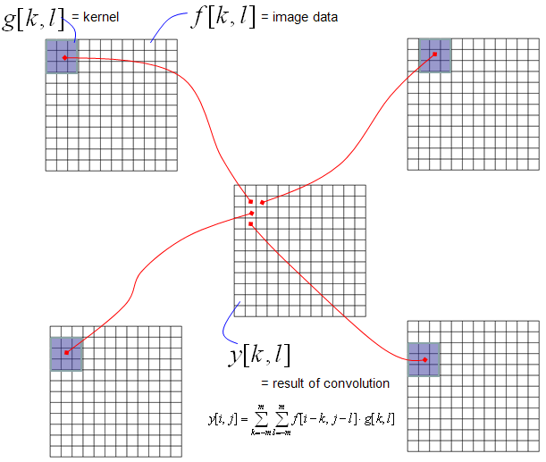
Following is one example of the process that I mentioned here with Octave/Matlab. You would see the source code at the bottom. Enjoy !!!
img=imread('Lena.png'); imgBW = rgb2gray(img); imshow(imgBW); b=[0 0 0;0 1 0;0 0 -1] pimg = conv2(imgBW,b); figure; imshow(pimg);
|